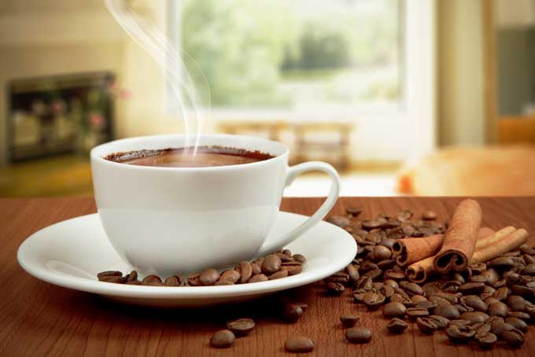

Café Coffee Day, a part of Coffee Day Global Limited, is India’s favourite hangout for coffee and conversations. Popularly known as CCD, we strive to provide the best experience to our guests. Our coffees are sourced from thousands of small coffee planters, who made us who we are today and we're glad to be a part of their lives.
Coffee is a brewed drink prepared from roasted coffee beans, the seeds of berries from certain flowering plants in the Coffea genus. From the coffee fruit, the seeds are separated to produce a stable, raw product: unroasted green coffee.
The seeds are then roasted, a process which transforms them into a consumable product: roasted coffee, which is ground into fine particles that are typically steeped, producing a cup of coffee.

Coffee is darkly colored, bitter, slightly acidic and has a stimulating effect in humans, primarily due to its caffeine content. It is one of the most popular drinks in the world and can be prepared and presented in a variety of ways
(e.g., espresso, French press, caffè latte, or already-brewed canned coffee). It is usually served hot, although chilled or iced coffee is common.

.jpg)
.jpg)